iPhone, ipad 등 Apple의 주력 모바일 기기에 들어가는 Apple Silicon의 핵심 라인업이다.
파트넘버는 'APL-'구성으로 되어있으며, 이는 Apple측 파트넘버이다. Txxxx형태의 넘버링은 Appple 내부적으로 사용하는 코드네임이다.
숫자 끝에 'X'가 붙으면 해당 칩의 성능강화버전이라는 뜻이며, 이는 iPad에 탑재된다. Apple A10에는 'Fusion'이라는 접미사가 붙었고, Apple A11부터 A16까지 'Bionic'이라는 접미사가 붙었다. A17에는 'Pro'라는
접미사가 붙었다. 이전에는 iPhone의 접미사를 AP에 붙는 번호로 확인가능했으나, 3GS, 4s, 5s, 6s, XS 등 접미사가 붙어 출시된 기종들이 있는 탓에 현재는 일치하지 않는다.
Apple A4
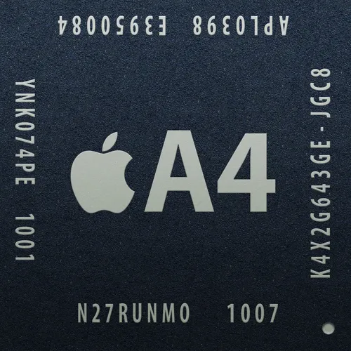
CPU: ARM-Cortex-A8 1코어 (32kb + 32kb L1 Cache / 512KB L2 Cache)
GPU: IT PowerVR SGX535 ?MHz
메모리: 32bit 싱글채널 LPDDR ?MHz
생산공정: 삼성 S.LSI 45nm(다이사이즈: 53.3mm^2)
주요 사용기기: iPhone 4, iPod touch(Gen_4), iPad(Gen_1), Apple TV(Gen_2)
Apple A시리즈의 첫번째 모바일 AP이다. Apple은 이전까지 삼성 LSI사업부의 모바일 AP를 그대로 납품받았다. 삼성 엑시노스 3110의 전신인 삼성전자 허밍버드와 코어 구성이 거의 같다. 당시 삼성전자는 ARM ARM-Cortex-A8의 클럭을
1Ghz로 넘기기 위해서 여러가지로 노력을 하고 있었다. Apple이 데려온 인트린시티와 함께 코어 커스텀을 하고 삼성전자의 도미노로직을 사용하여 ARM의 반대에도 불구하고 세계최초로 1Ghz의 클럭을 돌파했다.
다만 전력문제로 iPhone4에는 800Mhz, iPad(1Gen)에는 1Ghz로 클럭이 조정되어 들어간다. 이는 오디오 처리 프로세서인 Apple H1과 동급의 프로세싱 능력이다.
Apple A5
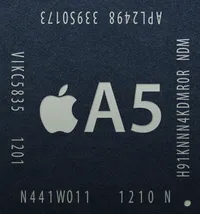
CPU: ARM-Cortex-A9 2코어 (32kb + 32kb L1 Cache / 1MB L2 Cache)
GPU: IT PowerVR SGX543 2코어(266MHz / 333MHz)
메모리: 32bit LPDDR2 ?MHz
생산공정: 삼성 S.LSI 45nm(다이사이즈: 122.2mm^2) / 삼성 S.LSI 32nm (다이사이즈: 69.9mm^2 / 37.8mm^2)
주요 사용기기: iPhone 4s, iPod touch(Gen_5), iPad 2, iPad mini, iPad Apple TV(Gen_3)
삼성전자와 같이 협력하여 Apple A4를 만든 인트린시티를 Apple이 인수한 후, Apple의 비중이 커진 AP이다. Apple A4까지는 오랜 기간의 경험이 있는 삼성전자가 단독으로 설계하다시피 했다면, 이 모델을 기점으로 Apple의 비중이 커지고,
삼성전자는 생산의 역할이 강해졌다. 다만 삼성전자 역시 ARM의 라이센스를 취득하여 삼성 엑시노스 시리즈를 만드는 만큼, 관련 기술자가 상주하고 있어 큰 차질없이 협력을 할 수 있었다고 한다.
ARM-Cortex-A9의 듀얼코어 구성으로 최대 클럭은 1Ghz이다. iPhone 4s와 iPod touch(5Gen)는 800MHz, iPad mini, iPad 2와 Apple TV에는 1Ghz로 들어간다. 벤치마크 결과의 경우, iPhone 4s를 기준으로 싱글코어 280점, 멀티코어가
490점으로 측정되었다(Geekbench 4기준). 이 칩셋은 A시리즈 사상 가장 극적인 성능 향상을 보인 칩으로 유명하다. CPU성능은 2배, GPU성능은 무려 7배나 상승하였기 때문이다.
iPad(3Gen) 공개 당시 기습적으로 공개된 Apple A5의 파생모델이다. 당시 모바일과 PC시장 둘 다 드물었던 QXGA 해상도를 처리하기 위해 Apple A5의 GPU를 강화시킨 AP이다. GPU성능을 약 2배 강화했지만 해상도는 4배 이상으로 높아졌고,
CPU성능은 동결되었기 때문에 레티나 디스플레이를 감당하기엔 여전히 만족스럽지 못했다. 특히 45nm공정으로 생산되어 발열이 문제가 되어서 모바일 AP로써는 이례적으로 히트 스프레더(구리 재질로 만들어진 얇은 판으로, 열전도율이 매우 높음.
CPU의 냉각에 주로 쓰임.)를 요했다. 또한 GPU의 다이사이즈가 커지다 보니 양산 수율도 빡빡해졌다. 다행히도 생산업체가 삼성 LSI였기에 별다른 문제가 없었다.
벤치마크 결과의 경우, iPad(3Gen)를 기준으로 할 때, CPU성능은 싱글코어가 약 330점으로 측정되었고 멀티코어가 약 580점으로 측정되었다(Geekbench 4기준).
Apple A6
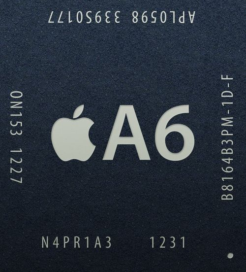
CPU: Apple Swift 2코어 1.3Ghz (32kb + 32kb L1 Cache / 1MB L2 Cache)
GPU: IT PowerVR SGX543 3코어 430MHz
메모리: 32bit 듀얼채널 LPDDR2 1066MHz
생산공정: 삼성 S.LSI 32nm(다이사이즈: 96.71mm^2)
주요 사용기기: iPhone 5, iPhone 5c
iPhone 5시리즈에 탑재되는 모바일 AP이다. 기존까지 ARM에서 개발한 마이크로아키텍처의 라이센스를 취득하여 설계했다면, 이번에는 Apple이 직접 명령어셋 라이센스를 취득하여 자체설계한 ARM호환 CPU아키텍처를 사용했다. GPU는 트리플코어라는
독특한 구성이다. 동일한 GPU로 쿼드코어를 구성한 Apple A5X보다 동일한 클럭일 경우에는 당연히 성능차이가 나지만, 둘 다 클럭 조절을 했기에 결과적으로는 Apple A5X와 동급의 성능을 보여준다.
이때부터 삼성LSI의 Apple A시리즈의 설계에 대한 관여도가 전에 비해 줄어든 것으로 보인다. 벤치마크 결과의 경우, iPhone 5를 기준으로 CPU성능은 싱글코어가 약 760점으로 측정되었고 멀티코어 점수가 약 1,200점으로 측정되었다(Geekbench 4기준).
Apple A6X
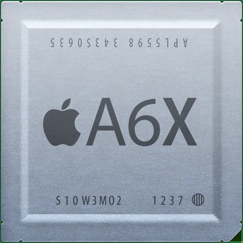
CPU: Apple Swift 2코어 1.4Ghz (32kb + 32kb L1 Cache / 1MB L2 Cache)
GPU: IT PowerVR SGX554 4코어 300MHz
메모리: 32bit 쿼드채널 LPDDR2 1066MHz
생산공정: 삼성 S.LSI 32nm(다이사이즈: 123mm^2)
주요 사용기기: iPad(Gen_4)
Apple A5X처럼 2K급 해상도인 QXGA를 버티기 위해 GPU를 강화한 Apple A6의 파생 모델. Apple A6이 Apple A5와 Apple A5X와 같은 GPU를 사용했기 때문에 이번에도 GPU 셰이더 코어 개수와 클럭을 조정하는 선에서 성능을 향상시킬 것으로 예측되었으나, IT(Imagination Technology) PowerVR SGX554 쿼드코어 GPU를 탑재하는 것이 확인되면서 수많은 전문가들에게 충격을 안겨주었다. 이는 Apple A5X로도 QXGA 해상도를 제대로 처리하지 못하는 모습이 보였기 때문에 성능 개선을 위한 특단의 조치를 취한 것으로 보인다.
이 때문에 다이사이즈는 x86기반의 저전력 CPU의 다이사이즈와 버금갈 정도로 크다. 벤치마크 결과의 경우, iPad(4Gen) 기준으로 CPU성능은 싱글코어가 약 800점으로 측정되었고 멀티코어 점수가 약 1,300점으로 측정되었다(Geekbench 4기준).
Apple A7
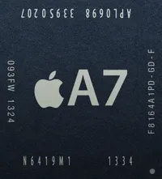
CPU: Apple Cyclone 2코어 (64kb + 64kb L1 Cache / 1MB L2 Cache / 4MB L3 Cache)
GPU: IT PowerVR G6430 375MHz
메모리: 64bit LPDDR3 1600MHz
생산공정: 삼성 S.LSI 28nm(다이사이즈: 102mm^2 / 트렌지스터 개수: 10억)
주요 사용기기: iPhone 5s, iPad mini 2/3, iPad Air
모바일 AP로는 세계최초로 64bit를 지원하는 CPU아키텍처를 탑재했다. Apple이 직접 라이센싱한 ARMv8명령어셋을 이용해 자체설계한 ARM호환 CPU아키텍처인 Apple Cyclone CPU를 탑재했다.
GPU의 경우, IT PowerVR G6430을 사용한다. 타사와 달리 iPhone 5s의 해상도가 낮기에 온스크린 점수가 스마트폰에서는 동급 혹은 상위의 성능을 자랑한다.
Cyclone CPU가 ARMv8 명령어셋 기반에다 체적도 거대한 편인지라 퍼포먼스가 아닌 벤치마크 결과로도 경쟁사의 모바일 AP와 비슷한 성능을 보여준다. 벤치마크 결과의 경우, iPhone 5s를 기준으로 CPU성능은 싱글코어가 약 1,300점으로
측정되었고 멀티코어 점수가 약 2,200점으로 측정되었다(Geekbench 4기준).
iPhone 6와 6Plus에 처음 탑재되었으며, Apple Silicon 중에서는 20nm로 생산된 최초의 모바일 AP이다. 또한 Apple의 탈 삼성전략과 삼성LSI의 내부 사정으로 인하여 주력 생산사가 TSMC로 교체되었다. 아마도 삼성LSI의 생산공정 미세화가 진행되면서
생산능력이 줄어 물량을 전보다 적게 받은 것으로 추정된다. 기본적인 클럭은 1.4GHz이나, iPod touch 6세대에는 1.1 GHz로 다운클럭되어 탑재되었다. 문제는 그럼에도 전작인 5세대 iPod touch에 비해 배터리 용량은 그대로면서 CPU의 전력 사용량이
급격히 올라 배터리 사용 시간이 줄었다고 한다.
사실 전작에서 탑재된 Apple Cyclone CPU를 리비전하여 탑재하였고, 이매지네이션 테크놀러지 PowerVR GX6450 GPU를 탑재했다. Apple A7의 약 두 배가량인 20억 개에 달하는 트랜지스터가 박혀 있으며 다이사이즈는 89 mm^2로 Apple A7와 비교해서 상당히 작아졌다. 한편, Apple은 Cyclone을 그대로 사용하면서도 이번에는 스로틀링 관리 능력이 우수해졌다고 소개했다. 하지만 이에 대해 사실상 불가능할 것이라는 의견이 많았고, 직접적으로 스로틀링 테스트를 진행하는 경우도 생겼다. 그리고 그 결과, Apple이 소개한 내용과 같은 결과가 나타나지는 않았지만, 그래도 유의미한 변화가 있는 것이 확인되었다.
재밌게도 Apple의 장수 AP로 자리매김하고 있다. 2014년에 롤아웃된 AP가 iPod touch 6세대, Apple TV, HomePod 등 여러 기기에 들어가기 때문. 아무래도 64비트 지원에 복잡한 인공신경망 연산이 필요없는 최소한의 AP만 요구되는 기기에 아직도 요긴하게 쓰이는 것으로 보인다. 장수 AP답게 OS 업그레이드도 상당히 오래 지원되는 편이며, iPad Air 2, iPad mini 4 한정이지만 iPadOS 지원 목록에 포함되었다. 한 술 더 떠 iPadOS 15까지 올라가는 기염을 토했다. 단 A8을 탑재한 다른 기기들은 전부 지원 목록에서 제외되었다. iPhone 6 시리즈와 6세대 iPod touch는 RAM 부족으로 iOS 13 지원기기 명단에서 제외되었다.
벤치마크 결과의 경우, iPhone 6를 기준으로 CPU성능은 싱글코어가 약 1,500점으로 측정되었고 멀티코어 점수가 약 2,700점으로 측정되었다(Geekbench 4기준). GPU성능은 약 4,200점으로 측정되었다(Compute Bench기준).
iPad Air 2를 위해 만들어진 Apple A8의 파생 모델이다. 기존 Apple AX 시리즈는 GPU 강화에 중점을 둔 구성을 보여줬지만, 이번에는 CPU도 어느 정도 강화되었다. CPU 아키텍처는 동일하지만 트리플코어로 늘리고 클럭도 1.5 GHz로 소폭 상승시켰다. Apple 측은 이로 인하여 Apple A8보다 싱글코어 점수는 약 13%, 멀티코어 점수는 약 55% 정도 더 높은 점수를 보여준다고 주장하였다. L2 Cache 역시 2 MB로 증가했으며 일부 연산 명령어의 소요 시간을 줄였다고 한다. 또한, 코어 수에 비례하듯 약 30억 개의 트랜지스터가 박혀있다고 한다.
벤치마크 결과의 경우, iPad Air 2를 기준으로 CPU성능은 싱글코어가 약 1,800점으로 측정되었고 멀티코어 점수가 약 4,200점으로 측정되었다(Geekbench 4기준). GPU성능은 약 7,800점으로 측정되었다(Compute Bench기준).
iPhone 6s, iPhone6s Plus에 탑재되었고, 후에는 iPhone SE애도 탑재된 모바일 AP이다. 2016년 3월에 발표된 iPhone SE에 탑재되면서 소비자들의 기대를 불러일으켰다. 왜냐하면, 6s시리즈보다 해상도가 낮기 때문에
속도가 빠르기 때문이다.
벤치마크 결과의 경우, iPhone 6s(삼성LSI)를 기준으로 CPU성능은 싱글코어가 약 2,500점으로 측정되었고 멀티코어 점수가 약 4,500점으로 측정되었다(Geekbench 4기준). 그리고
Geekbench5를 기준으로 싱글코어는 약 550점, 멀티코어가 약 1000점으로 측정되었다. GPU성능은 약 10,500점으로 측정되었다(Compute Bench기준).
iPad Pro를 위해 만들어진 Apple A9의 파생모델이다. Apple A9과 달리 L3캐시가 탑재되지 않았다. A9X와 함꼐 탑재되는 LPDDR4 1600MHz의 매인 메모리의 속도(대역폭)가 기존 A9에 탑재된 L3캐시의 속도에 근접하게 되었기 때문이라고
알려졌다. 캐시메모리란 빠른 장비와 느린 장비에서 그 속도 차를 극복하여 최대한의 성능을 발휘할 수 있게 하기 위함과 캐시 적중 실패 시 발생하는 딜레이를 감수하고 사용하는 '하이리스크-하이리턴'방식의 메모리이다. A9X의 경우처럼 메인 메모리의 속도가 A9에서의
L3캐시의 속도만큼 충분히 빠르다면, 오히려 L3캐시 적중실패 시의 페널티 대문에 성능 저하만 일으킬 뿐이다.
12.9형과 9.7형 모델 사이에 절대적인 성능 차이가 존재하는 이유는, 12.9형 모델에 비해 9.7형 모델의 RAM용량을 절반으로 줄이면서 메모리 모듈도 하나만 들어가게 되었다. 그러면서 메모리 모듈도 하나만 들어가게 되었는데, 덩달아 대역폭도 같이 반토막이 나버린
것과 0.1GHz만큼 소폭 낮아진 CPU의 클럭이 원인이다. 그래도 실 체감성능인 온스크린에서는 거의 동일한 퍼포먼스를 보여준다. 벤치마크 결과의 경우, iPad Pro(12.9)를 기준으로 CPU성능은 싱글코어 점수가 약 3,100점으로 측정되었고 멀티코어 점수가
약 5,300점으로 측정되었다(Geekbench 4기준). GPU성능은 약 16,000점으로 측정되었다(Compute Bench기준).
iPhone 7시리즈와 함께 공개되었다. CPU는 Apple Hurricane 듀얼코어 구성으로 빅 클러스터를 이루고, Apple Zephyr 듀얼코어 구성으로 리틀 클러스터로 이뤄 ARM big.LITTLE 솔루션(ARM사의 전력 소모 개선 솔루션)을 적용한 쿼드코어이다. HMP모드는 지원하지 않는다. 이에 따른 벤치마크 결과는 iPhone 7을 기준으로 싱글코어 약 3,500점, 멀티코어가 약 6,000점으로 측정되었다(Geekbench 4기준). GPU는 약 13,000점으로 측정되었다(Compute Bench기준). Apple에 따르면 2개의 고성능코어는 전작인 Apple A9보다 40%빠르고 Apple A8대비 50% 더 빠른 성능을 낸다고 한다. 여담으로, 1세대 iPhone 대비 성능은 120배 차이난다. 역대 iPhone에 들어간 A시리즈 칩셋 중 가장 큰 다이 사이즈를 가졌다. 심지어 Apple M1보다도 크다고 한다.
메모리 컨트롤러도 탑재해서 LPDDR4 SDRAM, NVMe 규격을 지원한다. 이외에도 위상차 검출 AF를 지원하는 ISP를 탑재했다.
CPU의 멀티코어 성능은 삼성전자의 엑시노스 8(Exynos 8890 - SamSung Galaxy S7시리즈에 탑재됨)의 수치와 비슷하지만싱글코어 점수는 제일 높다. 특히 엑시노스 8은 ARM big.LITTLE 솔루션을 적용한 HMP모드 지원 옥타코어라는 점에서 고무적이다. GPU의 경우, 공정 개선과 클럭 향상만으로 최대 50% 수준의 성능 향상을 달성한 것으로 보인다. 2017년 삼성전자의 엑시노스 9(Exynos 8895 - SamSung Galaxy S8시리즈에 탑재됨)이 공개되었으나, 공정 차이(당시 세계최초 10nm 공정)와 CPU코어 수의 차이가 있음에도 불구하고 약 15%밖에 떨어지지 않아서 여전히 높은 성능이다. 훗날 이는 2018년 이후 출시되는 모든 Intel Mac에 탑재되는 Apple T2의 기반이 되었다.
*cf(1) HMP모드: '이기종 간 다중 처리'. 빅코어로 이루어진 클러스터와 리틀코어로 이루어진 클러스터를 클러스터에 무관하게 필요한 시점에서 각각 사용. 스케줄러 자체에서 코어 각각을 통솔해 모든 코어 전체를 구동한다. 이 경우에도 전력 효율을 위해 리틀코어부터 작업이 할당되며, 리틀코어가 감당하기 어려운 작업은 빅코어에 할당하고 높은 멀티스레드 구동능력이 필요할 경우 빅코어와 리틀코어 전부를 동시에 구동시키는 것도 가능하다.
*cf(2) ARM big.Little 솔루션: ARM사에서 개발하는 ARM Cortex-A시리즈가 점차 고성능화되자, 전통적인 ARM CPU 설계에서의 가장 큰 특징이라 부를 수 있는 전성비가 저하되고 CPU 대기 시간 동안의 누설전류 문제가 점차 증가하게 되었다. big.LITTLE은 이러한 단점을 개선하고자 개발되었다. 단일 종류 코어로 모두 해결하기는 힘드니까 고성능 코어와 저전력 코어를 함께 집어넣어 유기적으로 대응하여 전성비를 끌어올리는 방식이다.
빅코어(혹은 빅클러스터)와 리틀코어(혹은 리틀클러스터)로 구분하며 빅코어는 고성능, 리틀코어는 저전력을 담당한다.
Apple A10X Fusion
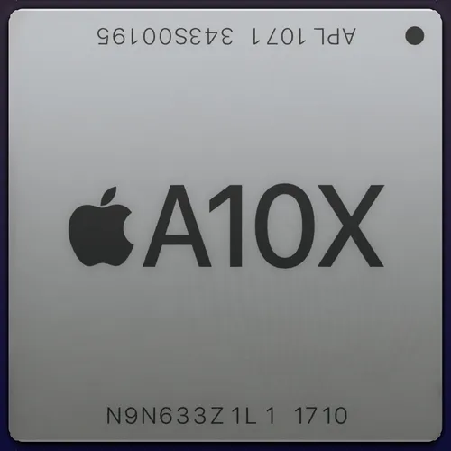
CPU: Apple Hurricane 3코어 2.36GHz + Apple Zephyr 3코어 1.3GHz (64kb + 64kb L1 Cache / 8MB L2 Cache)
GPU: IT PowerVR GT7800 + 12 Cluster 920MHz
메모리: 64bit 듀얼채널 LPDDR4 1600MHz
생산공정: TSMC 10nm FINFET(다이사이즈: 96.4mm^2)
주요 사용기기: iPad Pro(10.5형, 12.9형 Gen_2), Apple TV 4K
Apple A10의 파생형 모바일 AP이다. Apple 최초로 10nm공정으로 생산되었다.
CPU는 Apple Hurricane을 트리플코어 구성으로 빅 클러스터를 이루고, Apple Zephyr를 트리플코어 구성으로 리틀 클러스터로 이뤄서 ARM big.LITTLE 솔루션을 적용한 헥사코어 CPU를 탑재했다. 이또한 HMP 모드는 지원하지 않는다. A10 Fusion과 비교할 때 CPU는 빅 클러스터와 리틀 클러스터 모두 CPU 코어가 1개씩 증가했다. GPU는 A10fusion과 비교할 때 무려 150%의 미친 성능 향상과 함께 약 2배 수준의 전력 효율을 가진다고 한다. Apple A9X와 구성은 동일하지만, 공정 미세화로 인해 클럭이 높아지면서 성능이 향상되었다.
마찬가지로 메모리 컨트롤러도 탑재해서 LPDDR4 SDRAM, NVMe 규격을 지원한다. 이외에도 위상차 검출 AF를 지원하는 ISP를 탑재했다.
벤치마크 결과의 경우, iPad Pro(12.9 - Gen2)를 기준으로 CPU성능은 싱글코어 점수가 약 3,900점으로 측정되었고 멀티코어 점수가
약 9,400점으로 측정되었다(Geekbench 4기준). GPU성능은 약 30,000점으로 측정되었다(Compute Bench기준).
Apple A11 Bionic
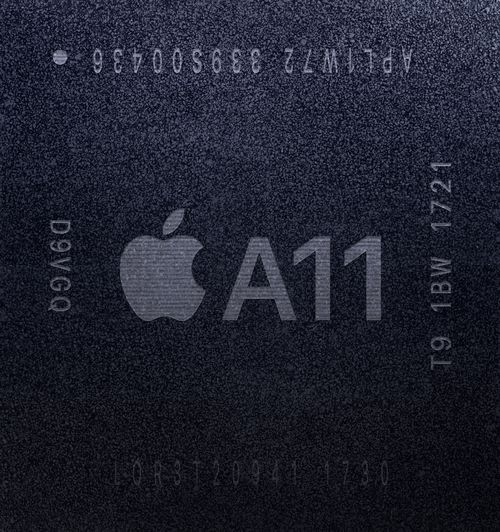
CPU: Apple Monsoon 2코어 2.39GHz + Apple Mistral 4코어 1.69GHz (64kb + 64kb L1 Cache / 8MB L2 Cache)
GPU: 1세대 자체 디자인 아키텍처 3코어 780MHz
NPU: Apple 1st Generation Neural Engine 2코어 600GOPS
메모리: 64bit 듀얼채널 LPDDR4X 2133MHz
생산공정: TSMC 10nm FINFET(다이사이즈: 87.66mm^2 / 트랜지스터 개수: 43억)
주요 사용기기: iPhone 8, iPhone 8 Plus, iPhone X
iPhone 8시리즈와 iPhone 출시 10주년을 기념하여 출시한 iPhone X과 함께 공개되었다.
CPU는 Apple Monsoon을 듀얼코어 구성으로 빅 클러스터를 이루고, Apple Mistral을 쿼드코어 구성으로 하여 리틀 클러스터로 이룬다. ARM big.LITTLE 솔루션을 적용한 HMP모드지원 헥사코어 CPU이다. 전작인 A10fusion과 비교할 때 약 25%의 성능 향상이 있으며(빅 클러스터 기준), 리틀 클러스터 기준 약 70%의 성능 향상이 있다고 한다. 'Anandtech'에 따르면 Mistral(리틀코어)마이크로아키텍처는 Apple A6에 탑재되었던 Swift아키텍처와 동일한 구조를 갖고 있다고 한다. GPU는 Apple이 최초로 개발한 1세대 디자인 GPU 아키텍처를 트리플코어 구성으로 탑재했다. 전작인 A10 Fusion과 비교할 때 약 30%의 성능 향상과 함께 약 2배 수준의 전력 효율을 가진다고 한다. 다만 스냅드래곤 845보다는 GPU 성능이 떨어진다.
이 프로세서부터 Apple이 최초로 개발한 NPU(인공신경망 프로세서)가 탑재되었다. 이름은 'Neural Engine'이며, 듀얼코어 구성이다. 이로 인해 생체 인식 솔루션과 연계하여 사용하거나 AI연산을 별도로 처리한다. 연산 성능은 600GOPS이다. GOPS는 '곱스'라고 불리며, 1초당 10억번 연산(Giga operation per second)을 한다는 뜻이다. 이는 기계학습에 특화되었다. iPhone의 기본 내장 앱인 카메라 속 '인물 사진'에서 객체를 인식하고 소프트웨어 처리를 할 때 Neural Engine이 담당한다. 그리고 또한 iPhone X부터 탑재된 Face ID에서 얼굴 인식을 하기 위해 사용되는데, 이는 머신러닝을 통해 사용자의 얼굴패턴을 학습한다. 따라서 사용할수록 사용자가 안경을 쓰든, 화장을 하든 등의 상황에서도 인식이 가능하게 된다. 모바일 AP에 내장을 함으로써, 데이터 네트워크를 이용해 GPU를 이용할 때보다 훨씬 적은 전력을 소모하는 머신러닝을 구현할 수 있으며 머신러닝을 소비자들이 이용할 수 있게 되었다는 점에서 고무적이라고 할 수 있다.
벤치마크 결과는 실탑재 기기인 iPhone X을 기준으로 CPU성능은 싱글코어 점수가 약 4,200점으로 측정되었고 멀티코어 점수가
약 10,400점으로 측정되었다(Geekbench 4기준). GPU성능은 약 15,000점으로 측정되었다(Compute Bench기준).
Apple A12 Bionic
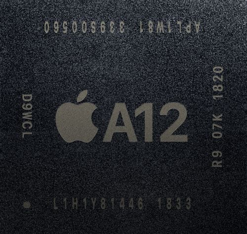
CPU: Apple Vortex 2코어 2.5GHz + Apple Tempest 4코어 1.54GHz (128kb + 128kb L1 Cache / 8MB L2 Cache)
GPU: Apple G11P 4코어 1.1GHz
NPU: Apple Next Generation Neural Engine 8코어 5 TOPS
메모리: 64bit 듀얼채널 LPDDR4X_2 133MHz
생산공정: TSMC 7nm FINFET[ArFi] (다이사이즈: 83.27mm^2 / 트랜지스터 개수: 69억)
주요 사용기기: iPhone XS, iPhone XS Max, iPhone XR, iPad Air(Gen_3), iPad mini(Gen_5), iPad(Gen_8), Apple TV 4K(Gen_2)
iPhone XS시리즈와 iPhone XR과 함께 공개되었다. CPU는 Apple Vortex를 듀얼 코어 구성으로 빅 클러스터를 이루고, Apple Tempest를 쿼드코어 구성으로 리틀 클러스터로 이룬다. ARM big.LITTLE 솔루션을 적용한 HMP 모드 지원 헥사코어 CPU이다. 전작인 A11 Bionic과 비교할 때, 빅 클러스터 기준 약 15%의 성능 향상과 약 40%의 전력 소모율 향상이 있으며 리틀 클러스터 기준 약 50%의 전력 소모율 향상이 있다고 한다. 그리고 세계최초로 TSMC 7nm FINFET(ArFI)공정에서 생산된 모바일 AP이다.
GPU는 Apple G11P를 쿼드코어 구성으로 탑재했다. 전작인 A11 Bionic과 비교할 때 약 50%의 성능 향상이 있다고 한다.
NPU의 경우, 0.6TOPS(TOPS: 초당 테라 연산[Tera Operations Per Second])였던 전작과는 달리, 최대 5 TOPS의 성능을 가진다. 다만 iPad Air(Gen_3)와 iPad mini(Gen_5)에는 일반 Apple Neural Engine을 탑재한 것으로 보인다(iPhone XS시리즈와 iPhone XR은 'Apple Next Generation Neural Engine').
벤치마크 결과는 실탑재 기기인 iPhone XS를 기준으로 CPU성능은 싱글코어 점수가 약 4,800점으로 측정되었고 멀티코어 점수가
약 11,000점으로 측정되었다(Geekbench 4기준). GPU성능은 약 21,000점으로 측정되었다(Compute Bench기준). L1 Cache의 용량이 늘어나고 NPU가 iPhone XS시리즈와 iPhone XR 기준으로 전작인 A11 Bionic은 600GOPS(0.6TOPS)의 성능을 가졌지만 이번에는 8배 가량 높아진 5 TOPS의 성능을 가진 것을 보면, 성능 향상은 이루어진 것이 맞지만 전통적인 벤치마크에서는 그동안 새로운 시리즈마다 보여주던 성능 향상폭과는 다르게 점수의 상승치가 크지 않은 편이다. 하지만 이는 그간 삼성전자의 엑시노스 시리즈 및 퀄컴의 Snapdragon 시리즈 소속 모바일 AP들이 해왔던 것처럼 배터리 타임을 개선하기 위해 모바일 AP의 전력 소모율을 개선하는 것이 사용자 입장에서 더욱 좋은 현상이라는 해석도 있다. 여기에 2017년에 들어서 AI기반 여러 소프트웨어들이 주요 콘텐츠로 사용되고 있는 스마트폰 시장의 특성을 고려하면, NPU는 Apple이 가지고 있는 중요하고도 좋은 요소 중 하나이기 때문에 전통적인 성능을 측정하는 부분에서 정체되었다고 해서 크게 문제되지 않을 것이라는 의견도 있다.
Apple A12X Bionic
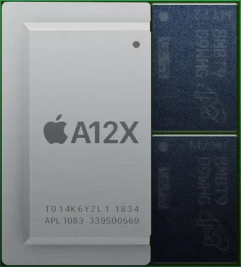
CPU: Apple Vortex 4코어 2.5GHz + Apple Tempest 4코어 1.5GHz (128kb + 128kb L1 Cache / 8MB L2 Cache)
GPU: Apple G11G 7코어 1.3GHz
NPU: Apple Next Generation Neural Engine 8코어 5 TOPS
메모리: 64bit 듀얼채널 LPDDR4X 2133MHz
생산공정: TSMC 7nm FINFET[ArFi] (다이사이즈: 122mm^2 / 트랜지스터 개수: 100억)
주요 사용기기: iPad Pro(11형 Gen_1), iPad Pro(12.9형 Gen_3)
2018년 10월 스페셜 이벤트에서 iPad Pro(11형 Gen_1), iPad Pro(12.9형 Gen_3)와 함께 공개되었다. CPU은 Apple A12 bionic과 같은 구성으로 이루어져있으며, GPU는 Apple G11G를 헵타코어(7코어) 구성으로 탑재했다. 이는 사실 다이사이즈 상 8코어 구성이나, 코어 1개가 비활성화되어있는 것이다. 8개 모두 활성화시킨 모델이 Apple A12Z bionic이다.
벤치마크 결과는 실탑재 기기인 iPad Pro(12.9형 Gen_3)를 기준으로 CPU성능은 싱글코어 점수가 약 5,000점으로 측정되었고 멀티코어 점수가
약 18,000점으로 측정되었다(Geekbench 4기준). GPU성능은 약 44,000점으로 측정되었다(Compute Bench기준).
이 AP를 기준으로 접미사로 'X'네이밍은 더이상 쓰이지 않으며, Apple M시리즈로 계승되어서 나온다.
Apple A12Z Bionic
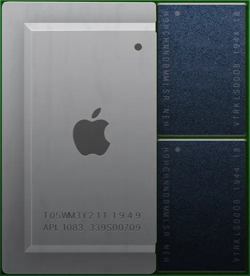
CPU: Apple Vortex 4코어 2.5GHz + Apple Tempest 4코어 1.5GHz (128kb + 128kb L1 Cache / 8MB L2 Cache)
GPU: Apple G11G 8코어 1.3GHz
NPU: Apple Next Generation Neural Engine 8코어 5 TOPS
메모리: 64bit 듀얼채널 LPDDR4X 2133MHz
생산공정: TSMC 7nm FINFET[ArFI] (다이사이즈: 122mm^2 / 트랜지스터 개수: 100억)
주요 사용기기: iPad Pro(11형 Gen_2), iPad Pro(12.9형 Gen_4), 개발자 전환 키트
iPad Pro(11형 Gen_2), iPad Pro(12.9형 Gen_4)와 함꼐 공개되엇다. CPU 및 GPU는 공개일 기준, 정확한 정보에 대해 알려지지 않았다. Apple은 GPU가 옥타코어 구성으로 탑재외었다고만 밝혔다.
여담으로, 이는 2020년 6월 23일에 진행한 Apple WWDC 2020에서 차세대 Apple silicon기반 Mac으로의 전환을 발표할 때 A12Z칩셋으로 시연했다. 또한 ARM mac의 호환성 체크를 위한 개발자용 Mac기기를 $500에 대여하는 서비스를 시행했었는데, 이 기기에도
Apple A12Z가 탑재되었다. 단 RAM용량이 16GB였다.
아래 영상에서 확인해 볼 수 있다.
Apple A13 Bionic
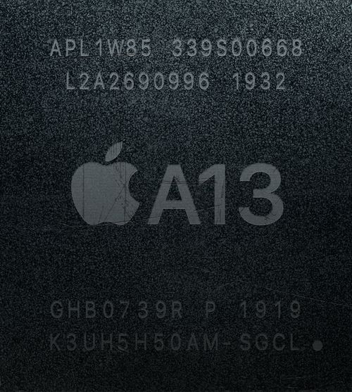
CPU: Apple Lightning 2코어 2.67GHz + Apple Thunder 4코어 1.73GHz (128kb L1 Order Cache + 128kb L1 data Cache / 8MB L2 Cache / 16MB system Cache)
GPU: 3세대 자체 디자인 아키텍처 4코어 1,230 MHz
NPU: 3세대 자체 디자인 Neural Engine 8코어 6 TOPS
메모리: 16bit 쿼드채널 LPDDR4X 2133MHz(34.1 GB/s)
생산공정: TSMC 7nm FINFET[ArFi] (다이사이즈: 98.48mm^2 / 트랜지스터 개수: 85억)
주요 사용기기: iPhone 11, iPhone 11Pro, iPhone 11Pro Max, iPhone SE(Gen_2), iPad(Gen_9), Studio Display
iPhone 11시리즈와 함꼐 공개되었다. CPU는 ARM big.LITTLE 기술을 채용하여 듀얼 코어 Lightning을 빅 클러스터로, 쿼드 코어 Thunder를 리틀 클러스터로 구성하였다. 전작 대비 빅 클러스터 기준 약 20%의 성능 향상과 약 30%의 전력 소모율 향상이 있으며 리틀 클러스터 기준 약 20%의 성능 향상과 약 40%의 전력 소모율 향상이 있다고 한다. 또한 CPU에 NPU와는 별개로 'AMX 블록'이라는 머신러닝 가속기가 들어갔다. 머신러닝 연산력이 Apple A12 Bionic 대비 6배 증가했다. NPU와는 달리 Apple Lightning 내부에 포함되어 있다. 코어 내부의 LS 유닛이 AMX 명령을 수행한다. NPU는 머신러닝 모델을 이용하는 Inference에 특화된 블록이고, AMX는 머신러닝 모델을 학습시키는 작업에 특화되어 있다.
GPU는 3세대 자체 디자인 GPU아키텍처를 쿼드코어 구성으로 탑재했다. 전작 대비 약 20%의 성능 향상과 약 40%의 전력 소모율 향상이 있다고 한다. NPU는 기존과 같은 8코어가 들어가며, Apple A12 Bionic 대비 20% 더 빠르고 15% 더 낮은 전력을 소모한다.
벤치마크 결과는 실탑재 기기인 iPhone 11을 기준으로 CPU성능은 싱글코어 점수가 약 5,400점으로 측정되었고, 멀티코어 점수가
약 13,800점으로 측정되었다(Geekbench 4기준). GPU성능은 약 29,000점으로 측정되었다(Compute Bench기준). 'Anandtech'에서 분석한 결과 Apple A12 Bionic에 비해 고성능 코어의 클럭이 6% 오른 2.67GHz로, 고효율 코어는 최대 12.3% 증가한 1,73GHz로 작동한다고 밝혀졌다. 이는 전작인 Apple A12 Bionic와 마찬가지로, 단일 코어 클럭 기준이며 추가적인 부하가 걸릴 경우 고성능 코어는 2.59GHz까지 낮아진다. 하지만 특히 고효율 코어가 인상적이다. 전작보다 마이크로아키텍쳐에서 많은 부분이 변경되었는데, 클럭당 명령어 처리 횟수의 향상이 최대 39%라는 점이다. 이는 경쟁사보다 2.5배에서 3배정도 뛰어난 성능이며, 전성비는 2배의 차이가 난다.
Apple A14 Bionic
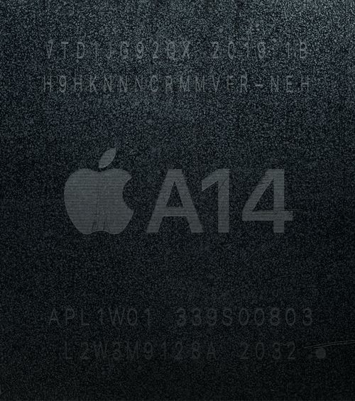
CPU: Apple Firestorm 2코어 2.99GHz + Apple Icestorm 4코어 1.82GHz (Firestorm: 192KB L1 Order Cache + 128KB L1 data Cache / 8MB L2 share Cache
Icestorm: 128KB L1 Order Cache + 64KB L1 data Cache / 4MB L2 share Cache / 16MB system Cache)
GPU: Apple G13 4코어 1,278MHz
NPU: 16코어 4세대 Neural Engine 11 TOPS
메모리: 16bit 쿼드채널 LPDDR4X 2133MHz(34.1 GB/s)
생산공정: TSMC 5nm FINFET[EUV] (다이사이즈: 88mm^2 / 트랜지스터 개수: 118억)
주요 사용기기: iPad Air(Gen_4), iPad(Gen_10), iPhone 12, iPhone 12mini, iPhone 12Pro, iPhone 12Pro Max
iPad Air(Gen_4)와 함꼐 공개되었다. 이는 iPhone이 아니라 iPad에 의해 최초로 공개된 AX 시리즈가 아닌 AP이다. 팀쿡 체제 이후로는 최초의 사례다. CPU는 ARM big.LITTLE 기술을 채용하여 2코어 Apple Firestorm을 빅 클러스터로, 4코어 Apple Icestorm을 리틀 클러스터로 구성하였다. Apple A12 Bionic 대비 약 40%의 성능 향상과 약 20%의 전력 소모율 향상이 있다고 한다. Apple A13 Bionic과 비교하면 약 16%의 성능 향상폭을 가진 셈이다. 특히 빅클러스터인 Apple Firestorm의 경우, 8-Wide 디코더 구조를 가지는데, 이는 Apple A17 Pro 출시 전까지 현용 CPU 역사상 가장 넓은 아키텍처에 속했다. 아직 출시되지 않은 IBM POWER10, 그리고 태어나지 못한 채로 프로젝트가 드랍이 된 SARC의 Exynos M6만이 이정도의 코어 규모를 가진다고 한다. 백엔드 면에서도 Apple의 Firestorm은 7개의 정수 실행 유닛과 전작 대비 33% 확장된 4개의 FP/Vector 연산 유닛을 보유한다. 이를 통하여 약 3GHz의 클럭에서도 약 5GHz 전후로 작동이 되는 x86 CPU들을 SPECint/fp 기준 1코어 성능 비교에서 비등한 성능을 내고 있으며, AMD와 인텔의 x86 코어가 약 20W로 작동할 때, Apple의 Firestorm은 DRAM과 전력 레귤레이터까지 포함한 칩셋 전체 전력소모를 약 4~5W 선으로 전력소모를 억제하는 데 성공하였다. 또한 아난드텍이 커널을 분석해 얻어낸 결과에 따르면, 192KB라는 거대한 명령어 캐시를 가진 것으로 밝혀졌다. 이는 경쟁 ARM 코어 대비 3배나 되는 크기이며 현대의 x86 아키텍처 대비 6배나 되는 크기이다. 게다가 거대한 용량에도 불구하고 캐시 액세스 시간이 3사이클에 불과하다. AMD의 32KB 캐시는 액세스 시간이 4 사이클이며 인텔 서니코브의 48KB 캐시는 5 사이클의 액세스 시간이 걸린다. 또한 리틀 코어의 명령어 캐시도 128KB로 경쟁사 빅 코어보다도 훨씬 큰 크기를 가진다.
GPU는 Apple G13을 쿼드코어 구성으로 탑재했다. Apple A12 Bionic 대비 약 30%의 성능 향상이 이루어졌다. Apple A13 Bionic과 비교하면 약 8%의 향상폭을 가진 셈이다. NPU는 Apple 자체 뉴럴 코어 아키텍처를 16코어 구성으로 탑재했다. 공정 미세화로 인해 확보한 트랜지스터는 거의 다 Neural Engine의 성능 향상에 투자한 것으로 보인다. Apple 발표치에 따르면 성능은 최대 11 TOPS이다.
벤치마크 결과는 CPU성능은 싱글코어 점수가 1,583점으로 측정되었고, 멀티코어 점수가
약 4,198점으로 측정되었다(Geekbench 5기준). Apple A13 Bionic 대비 약 18~19%정도 향상되었다. GPU성능은 2,229점으로 측정되었다(Wild life Extreme 벤치마크 기준).
Apple A15 Bionic
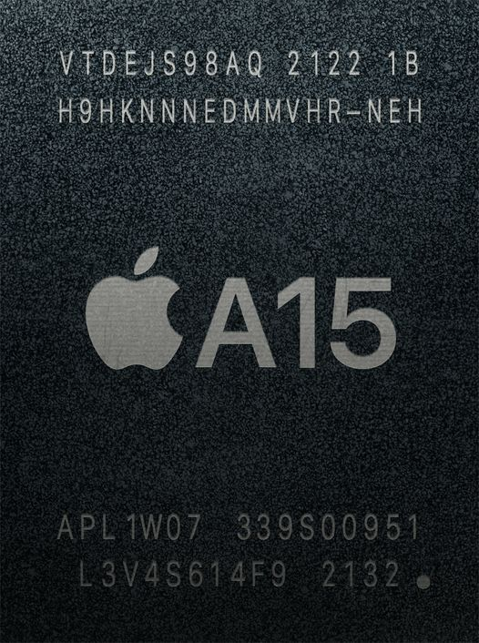
CPU: Apple Avalanche 2코어 + Apple Blizzard 4코어 (Avalanche: 192KB L1 Order Cache + 128KB L1 data Cache / 12MB L2 share Cache
Blizzard: 128KB L1 Order Cache + 64KB L1 data Cache / 4MB L2 share Cache / 32MB system Cache )
GPU: 5세대 자체 디자인 아키텍처 1338MHz 고급형: 5코어 / 일반형: 4코어
NPU: 16코어 5세대 Apple Neural Engine 15.8 TOPS
메모리: 16bit 쿼드채널 LPDDR4X 2133MHz(34.1 GB/s)
생산공정: TSMC 5nm FINFET P[EUV] (다이사이즈: 96.4mm^2 / 트랜지스터 개수: 150억)
주요 사용기기: iPad mini(Gen_6), iPhone 13, iPhone 13mini, iPhone 13Pro, iPhone 13Pro Max, iPhone SE(Gen_3), iPhone 14, iPhone 14Plus, Apple TV 4K(Gen_3)
iPad mini(Gen_6), iPhone13시리즈와 함께 공개되었다. CPU는 ARM big.LITTLE 기술을 채용하여 2코어 Apple Avalanche를 빅 클러스터로, 4코어 Apple Blizzard를 리틀 클러스터로 구성했다. IPC(클럭당 명령어 처리 횟수)의 향상에 관한 정확한 자료는 존재하지 않으나, 벤치마크 결과로 미루어볼 때 전작 대비 싱글 코어는 약 10%, 멀티 코어는 18% 정도 향상된 것으로 보인다. 다만 공정 개선이 없었고 아키텍쳐의 개선도 크지 않았는지 Apple A14 Bionic 대비 클럭 향상분 만큼만 성능이 올랐고 기존보다 클럭을 올려서 CPU의 전성비는 되려 A14보다 미세하게 떨어지는 것으로 측정되었다.
GPU는 5세대 자체 디자인 GPU 아키텍처를 5코어 구성으로 탑재했다. 단, iPad mini(Gen_6), iPhone 13 Pro, iPhone 13 Pro Max, iPhone 14, iPhone 14 Plus에만 온전한 5코어 GPU가 들어가며, iPhone 13 mini와 iPhone 13, iPhone SE(3세대)는 4코어로 GPU 코어 1개를 비활성화하는 방식으로 세그먼트 구분을 두었다.(iPhone 13시리즈 출시 당시 일반모델은 4코어, 프로모델은 5코어로 차등 탑재되었고, iPhone 14시리즈로 오면서 14일반 모델에 5코어 Apple A15 Bionic이 탑재된 것이다.) 5코어 GPU 기준 전작인 Apple A14 Bionic 대비 약 55%의 성능과 35% 정도의 전력 효율이 향상됐다. 4코어 GPU 기준으로도 전작 대비 약 15%의 성능 향상을 가진다. GPU 전성비 또한 상당한 수준으로 상승했다. NPU는 5세대 Apple Neural Engine을 16코어 구성으로 탑재했다. Apple의 발표에 따르면 성능은 전작 대비 43.6% 향상되어 최대 15.8TOPS이며, 새로운 시네마틱 모드와 스마트 HDR 4를 구동한다고 한다. iPhone 14에서는 새롭게 추가된 Photonic Engine도 같이 구동한다.
생산 공정은 TSMC의 5nm FinFET P(EUV)공정이다. 트랜지스터 수는 전작인 Apple A14 Bionic의 118억 개에서 150억 개로 약 27% 증가하였다. 기존 Apple M1의 160억 개와 유사할 정도로 트랜지스터 수가 크게 늘었는데, 늘어난 트랜지스터의 상당수는 CPU보다 코덱과 관련된 언코어와 NPU 쪽에 우선적으로 투자된 것으로 보인다. CPU의 성능 향상은 공정 개선으로 인한 약 10%의 클럭 향상이 전부이다. 즉, 직접적인 성능 향상보다는 새로운 카메라나 디스플레이 등의 보이지 않는 요소에 집중한 것이다.
벤치마크 결과는 CPU성능은 싱글코어 점수가 1,745점으로 측정되었고, 멀티코어 점수가 약 5,030점으로 측정되었다(Geekbench 5기준). GPU성능은 5코어 모델이 14,216점, 4코어인 iPhone 13 일반모델 기준 10,610점으로 측정되었다(Geekbench 5 기준). Apple은 다른 모든 경쟁사의 칩보다 CPU는 50%, GPU는 30% 더 빠르다고 발표했으나 실제로는 CPU의 경우 대략 62%로, 발표치보다 더 높게 나왔다.
Apple A16 Bionic
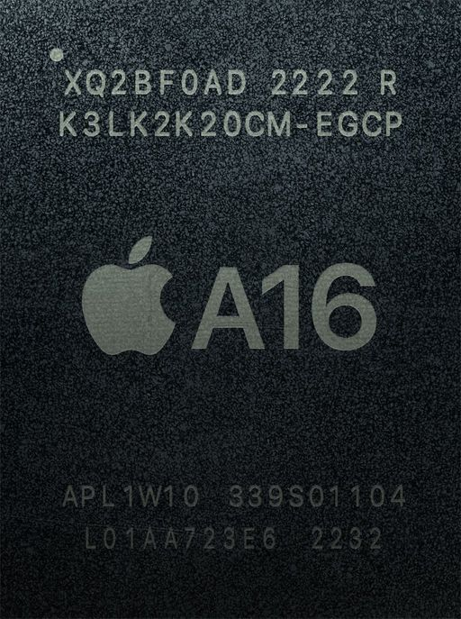
CPU: Apple Everest 2코어 3.46GHz + Apple Sawtooth 4코어 2.02GHz (Everest: 192KB L1 Order Cache + 128KB L1 data Cache / 16MB L2 share Cache
Sawtooth: 128KB L1 Order Cache + 64KB L1 data Cache / 4MB L2 share Cache / 24MB system Cache)
GPU: 5코어 5세대 자체 디자인 아키텍처 1338MHz
NPU: 16코어 6세대 Apple Neural Engine 17 TOPS
메모리: 16bit 쿼드채널 LPDDR5 3200MHz(51.2 GB/s)
생산공정: TSMC 4nm FINFET P[EUV] (다이사이즈: 112.75mm^2 / 트랜지스터 개수: 160억)
주요 사용기기: iPhone 14Pro, iPhone 14Pro Max, iPhone 15, iPhone 15Plus
iPhone 14Pro 시리즈와 함께 공개되었다. iPhone 14의 일반라인업에는 전작인 Apple A15 Bionic이 탑재되었다. CPU는 ARM big.LITTLE 기술을 채용하여 2코어 Apple Everest를 빅 클러스터로, 4코어 Apple Sawtooth를 리틀 클러스터로 구성했다. Apple의 발표에 따르면, 효율 코어의 전력 소모를 경쟁사의 최고 효율 코어 대비 3분의 1로 줄였다고 한다. 이외에 기존 A15 칩셋 대비 20%의 전력 사용량을 절감하였다. 이는 전성비로는 25% 향상된 결과이다.
GPU는 5세대 자체 디자인 GPU 아키텍처를 5코어 구성으로 탑재했다. 개선된 공정과 방열설계, 메모리 변경으로 인한 대역폭 증가로 3DMark Wildlife Extreme 벤치마크 기준, 기존 Apple A15 Bionic의 5코어 모델 대비 약 10% 정도 성능이 향상되었다. 외부적인 요인을 제외하고 아키텍처 자체만 놓고 보면, 거의 변경점이 없어 성능 향상은 미미하여 전작 Apple A14 Bionic-Apple A15 Bionic간의 GPU 성능 향상폭을 감안하면 이번 세대에서는 아쉬운 모습이다. 물론 Apple이 이번 프로세서는 성능보다는 전력효율에 중점을 두었다고 언급한 만큼, 풀로드 시 소비전력 소폭 감소와 개선된 방열설계로 전작의 단점으로 지적되던 지속 부하시 발열과 성능이 개선된 모습을 보여주었다.
NPU는 6세대 Apple Neural Engine을 16코어 구성으로 탑재했다. 17 TOPS의 성능을 가지며, 새로운 Photonic Engine 등을 구동한다.
메모리는 LPDDR5 규격을 채용하여 GPU의 메모리 엑세스 대역폭이 50% 향상되었다. A 시리즈에서는 최초로 LPDDR5 규격을 지원한다.
TSMC 4nm FinFET P (EUV) 공정으로 표기되어 있지만, 실제로는 TSMC의 N5, N5P에 비해 성능과 전력효율이 향상된 사실상의 5nm 공정(N4P)으로 제조되었다. 트랜지스터 개수는 전작 대비 10억 개 증가한 160억 개로 Apple M1과 동일하다.
iPhone 14Pro의 Geekbench 5 벤치마크가 싱글코어 1,887점과 멀티코어 5,455점으로 공개되었다. 전작 대비 각 약 10.5%, 17.1%씩 성능향상이 이루어졌다. 전작 대비 GPU 성능 향상폭이 작았던 탓에, GPU 성능에 한해서는 2022년 하반기에 발표된 퀄컴 스냅드래곤 8 Gen 2에게 역전당했다. 물론 실제 게이밍에서는 GPU뿐만 아니라 CPU에도 상당한 연산량을 요구하기 때문에, 여전히 CPU 성능과 전성비가 Apple Silicon 대비 많이 밀리는 안드로이드 계열 SoC들보다 여전히 더 높은 성능을 보여준다. 여러모로 GPU 한정으로는 여태까지 거머쥐었던 강점이 희석되어버린 상황이기에, 차세대에서 경쟁이 되려면 Apple 또한 공정 미세화나 GPU 아키텍처 변경 등으로 성능을 높은 폭으로 향상시켜야 하는 상황이다. 한편, 이에 대해 'MacRumors'에서는 본래 Apple A16 Bionic에서는 레이 트레이싱 가속을 포함한 새로운 GPU를 적용할 계획으로 개발이 진행되었으나 막바지쯤 발생한 배터리에 치명적인 수준의 전력 소모, 발열의 문제를 해결할 시간적 여유가 없었기 때문에 이 설계를 폐기하고 A15의 GPU와 유사한 설계로 갈 수밖에 없었다는 내용의 기사를 냈다. 이는 TSMC의 3nm공정 생산계획에 차질을 빚으며 생긴 문제들이다.
Apple A17 Pro
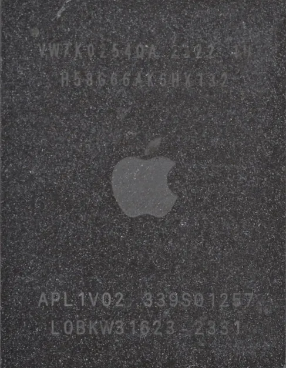
CPU: Apple ??? 2코어 3.78GHz + Apple ??? 4코어 2.11GHz (???: 192KB L1 Order Cache + 128KB L1 data Cache / 16MB L2 share Cache
???: 128KB L1 Order Cache + 64KB L1 data Cache / 4MB L2 share Cache / 24MB system Cache)
GPU: 6코어 6세대 자체 디자인 아키텍처 1398MHz
NPU: 16코어 7세대 Apple Neural Engine 35 TOPS
메모리: 16bit 쿼드채널 LPDDR5 3200MHz(51.2 GB/s)
생산공정: TSMC 3nm FINFET B[EUV] (다이사이즈: 103.8mm^2 / 트랜지스터 개수: 190억)
주요 사용기기: iPhone 15Pro, iPhone 15Pro Max
iPhone 15Pro 시리즈와 함꼐 공개되었으며, 전작들과는 다르게 접미사에 'Pro(프로)'를 사용하였다. 전작까지 패키지 외부에 각인되어 있었던 SoC이름이 삭제되고 Apple로고만 존재하도록 변경되었다. CPU는 정확한 정보는 알려지지 않았으며 Apple은 키노트에서 자체 성능은 최대 10% 빨라졌다고 밝혔다. 성능 코어는 9-Wide로 확장되고 파이프라인 구조도 변경되었으며, 효율 코어의 경우 직접적인 수치 언급은 없지만 아키텍쳐 변경이 있었고, 경쟁작 대비 최대 3배 좋은 전성비를 보여준다고 한다.
GPU는 6코어 구성으로 탑재되었으며, 최대 20% 더 빨라졌다고 밝혔다. 또한, 메시 셰이딩과 하드웨어 레이 트레이싱 가속을 지원하며, MetalFX 업스케일링을 통해 GPU와 Neural Engine이 작업을 분담하여 전력 소모를 줄일 수 있다. 그리고 'Dynamic Caching'기술을 통해 GPU가 메모리에 각 작업당 정확히 필요한 용량만을 능동적으로 할당하며, 낭비를 줄여 메모리를 더 효율적으로 활용할 수 있게 돕는다.
NPU는 7세대 Apple Neural Engine을 16코어 구성으로 탑재했다. 35 TOPS의 성능을 가지며, 이는 전작의 17 TOPS에 비해 두 배 이상 향상된 것이다.
Geekbench 6기준 싱글코어 2,900점, 멀티코어 7,200점가량으로, 전작대비 각 14%, 10%의 성능 향상을 보여준다. 이는 Apple측에서 발표 당시 주장한 수치보다 좀 더 높은 성능 향상 폭을 보인다. GPU의 경우, Geekbench 6기준 27,359점으로, 전작 대비 20% 향상되었다. 이는 Apple이 발표한 만큼의 성능 향상폭을 보인다.